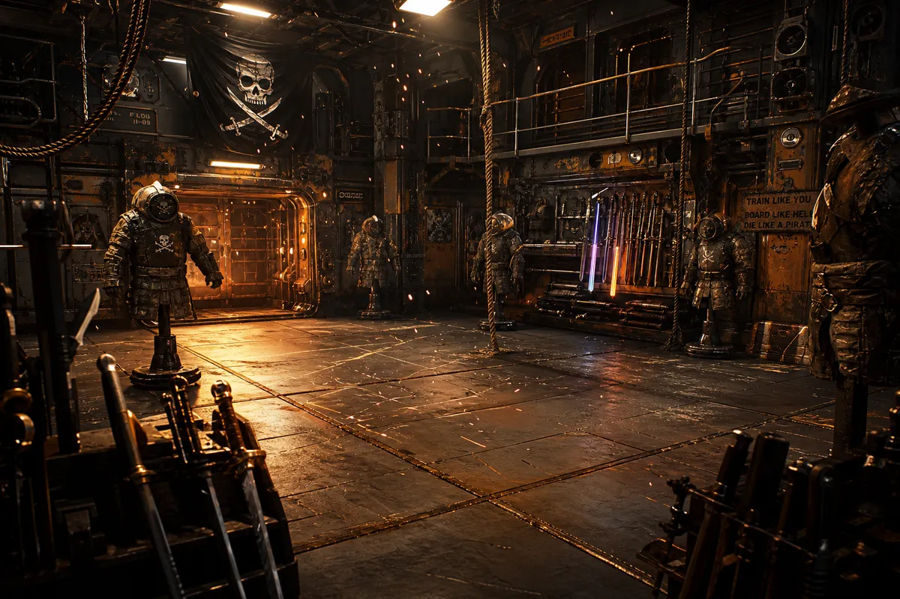
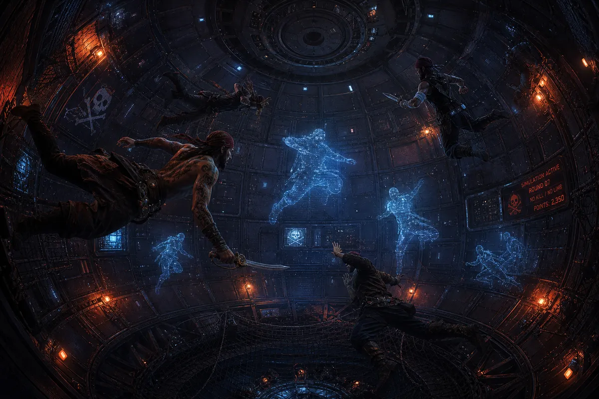
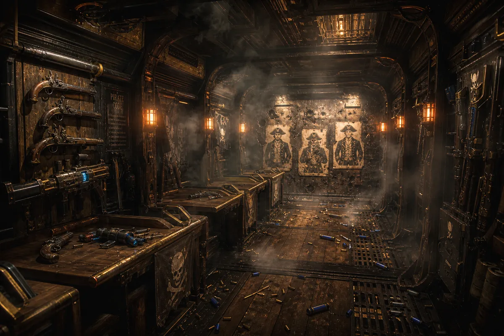
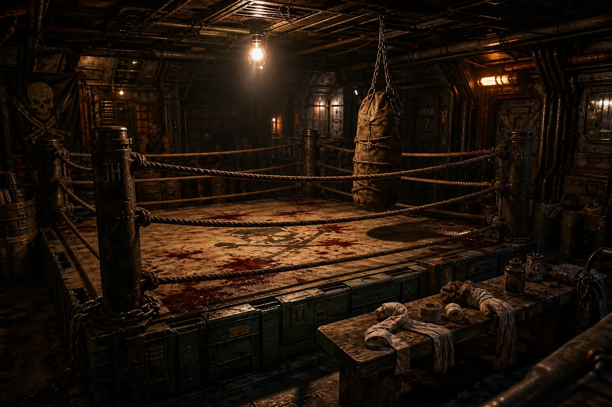
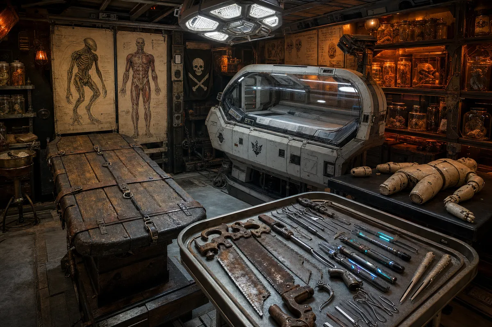

Where the crew becomes dangerous

Deck 4, Section 7 — Main Training Hall
The largest open space on the ship that is not the cargo hold. Padded metal floors scarred from a thousand sword strikes. Weapon racks along every wall — cutlasses next to energy blades, boarding pikes next to stun batons. The training dummies are stuffed spacesuits. Some of them have names.

Deck 4, Section 9 — Spherical Module
A spherical room where gravity dies on command. Magnetic grip panels on every surface. The crew trains to fight floating — because boarding actions happen in zero-G and the ones who panic are the ones who die. Holographic enemies flicker blue. They do not feel pain. The crew does.

Deck 5, Section 2 — Starboard Corridor
A long narrow corridor with blast walls at the far end, cratered and scorched from a decade of plasma fire. Old flintlock pistols hang next to energy weapons on the rack. The paper targets are shaped like naval officers. Nobody questions this. Ammunition is rationed. Accuracy is not optional.

Deck 3, Cargo Bay 2 — Converted
A fighting ring built from cargo crates and thick rope in a low-ceilinged bay. Bloodstains on the canvas that nobody cleans because they are the scoreboard. A punching bag made from a stuffed duffel bag swings from chains. Crew initials carved into the corner posts. Friday nights, the whole ship comes down. Silver watches from the doorway. He never bets. He already knows.

Deck 2, Section 8 — Port Side
Half butcher shop, half surgery. An old wooden table with leather straps sits next to a modern med-pod. Anatomical charts of human and alien bodies cover the walls. Jars of specimens line the shelves — nobody asks what is in them. Rusty 18th century bone saws hang next to laser scalpels. The practice dummy has removable limbs. It has been reassembled wrong so many times it now has three arms and the crew calls it Lucky.